The microcontroller in a control system

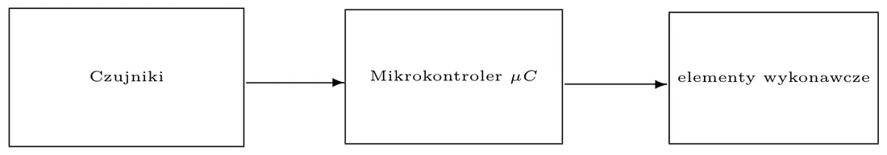
- The program in the microcontroller implements the control algorithm — it is easy to change.
- Signals from sensors must be matched to the microcontroller, and the microcontroller's digital signal must be turned into something that moves an actuator (a motor, a heater, a valve).
- Adding a new sensor or actuator is usually harder than changing the program.
Input/output pins

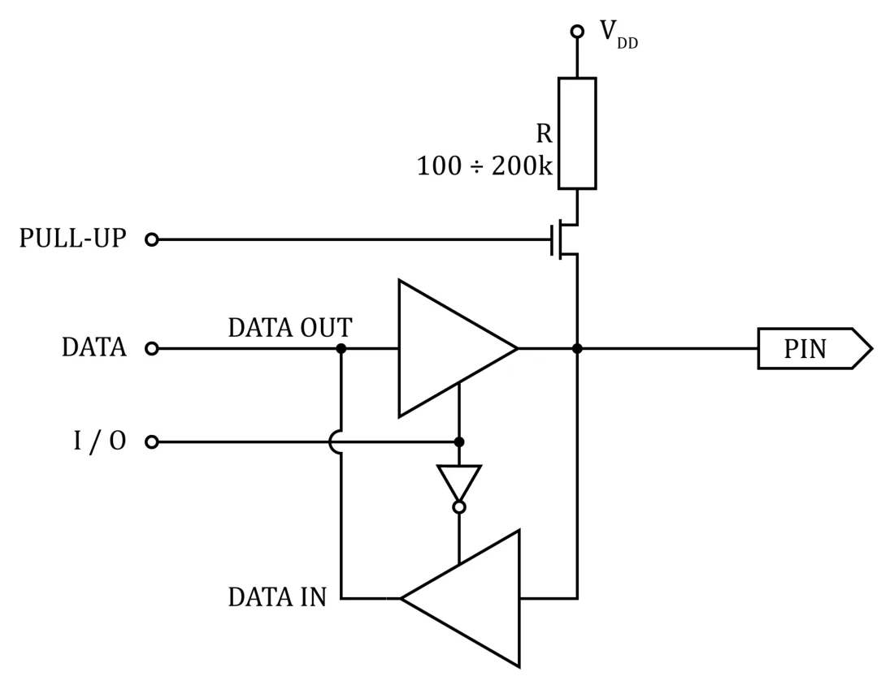
Every pin has to be configured in the program:
pinMode(13, OUTPUT); // pin 13 as an output
pinMode(14, INPUT); // pin 14 as an input- A pin has one role at a time — either input or output.
- An output has two states: low and high. An input can have the pull-up resistor enabled.
- One pin can supply or sink 40 mA.
- A pin set as an output must not be connected directly to ground or to the supply.
From the site author (not in the lecture)
40 mA is the absolute maximum; about 20 mA is a safe design value. That is enough for an LED (with a resistor!), but not for a motor, a relay or a speaker — those need a transistor as a switch (below).
PWM — pulse-width modulation

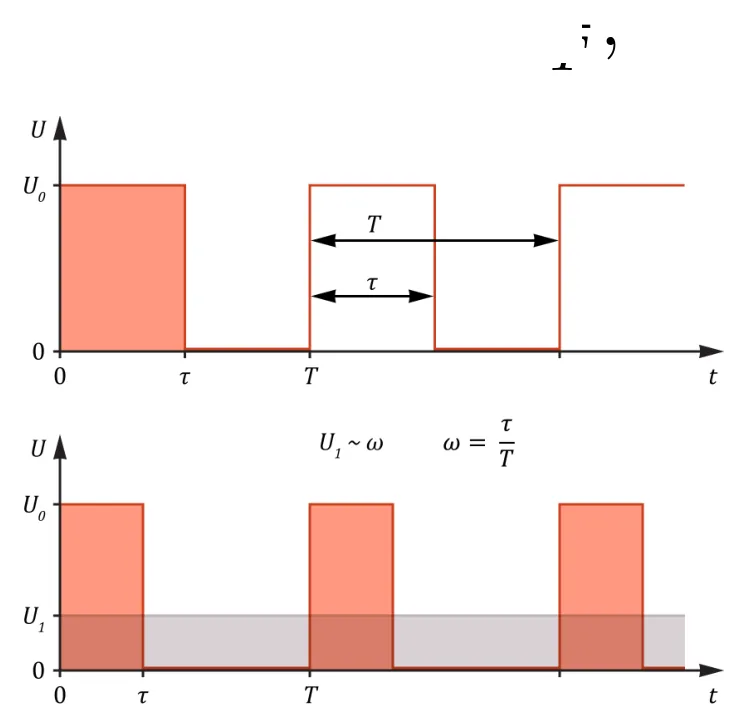
A digital signal has only 0 V and 5 V. To "fake" values in between, we switch it on and off very quickly. The duty cycle is the ratio of the pulse duration to the period:
- The average voltage is proportional to the duty cycle: 50% of 5 V gives 2.5 V "on average".
- Passed through a low-pass filter (integration), PWM becomes an analog signal.
- Uses: controlling motor speed, LED brightness.
In plain words
Switching a light on and off very fast. The eye cannot keep up and simply sees a dimmer bulb: the longer it is on in each cycle, the brighter it looks.
From the lab materials
On the Arduino UNO the PWM signal has a frequency of about 490 Hz (period 2.04 ms). The function analogWrite(pin, value) takes a value 0–255 (0 = always low, 255 = always high).
Other control-signal standards mentioned in the lecture: PCM, PPM (several channels on one wire), SBUS, IBUS, MSP.
The hobby servo

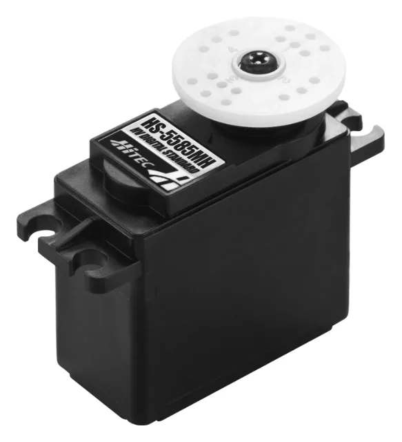
Three wires: ground, supply and control. It is driven by pulses repeated every 20 ms (50 Hz); the pulse width (in the 1–2 ms range) sets the angle:
| Pulse width | Position |
|---|---|
| 1.25 ms | 0° |
| 1.5 ms | 90° (neutral) |
| 1.75 ms | 180° |
The transistor as a switch
A microcontroller supplies little current, so larger loads are switched through a transistor working as a switch.

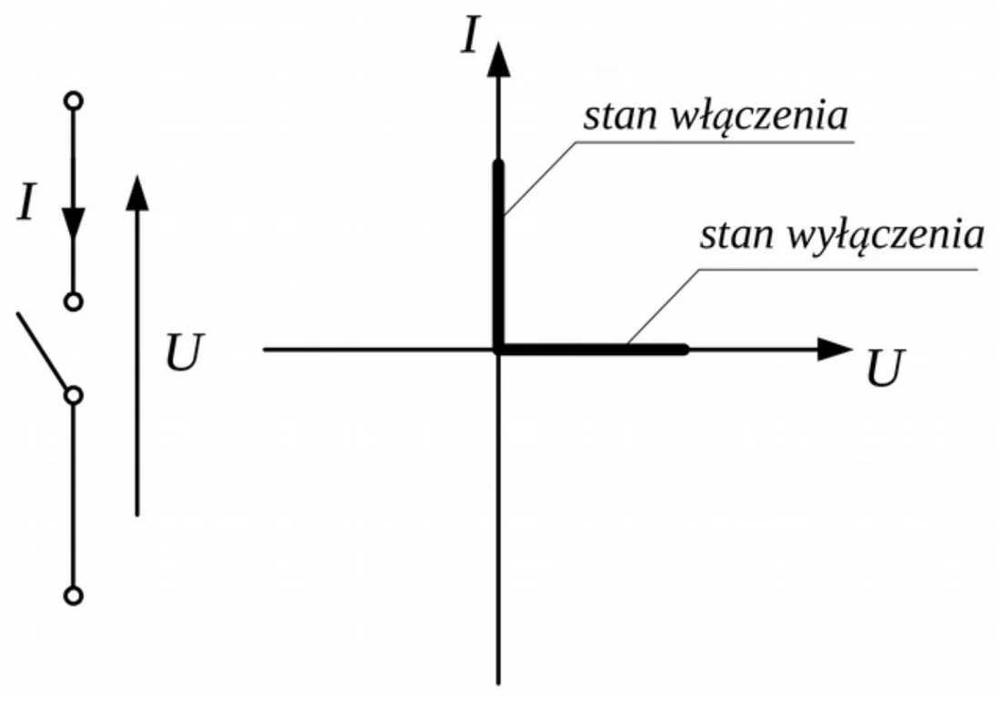

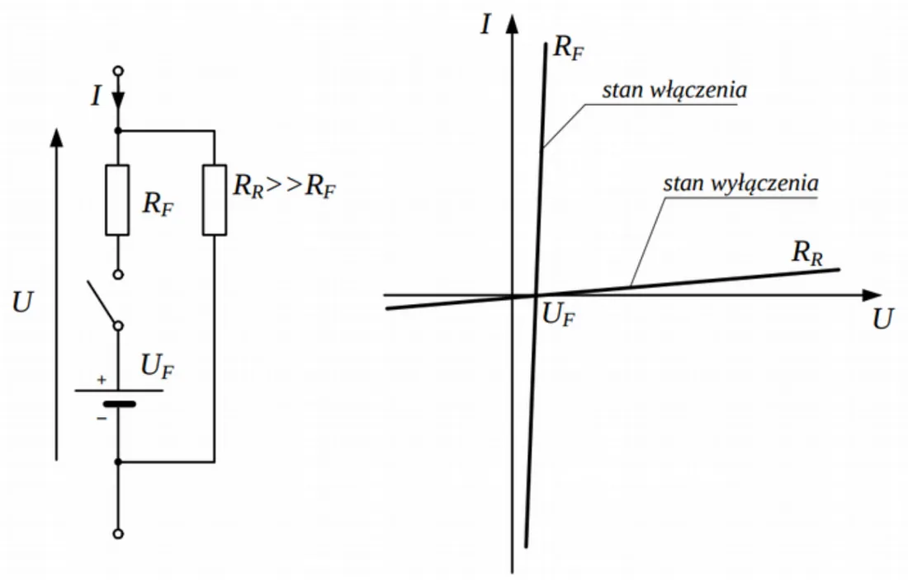
- Ideal switch: zero resistance when on, infinite when off.
- Real switch: a small resistance RF (and a small voltage drop) when on, a large but finite RR when off.

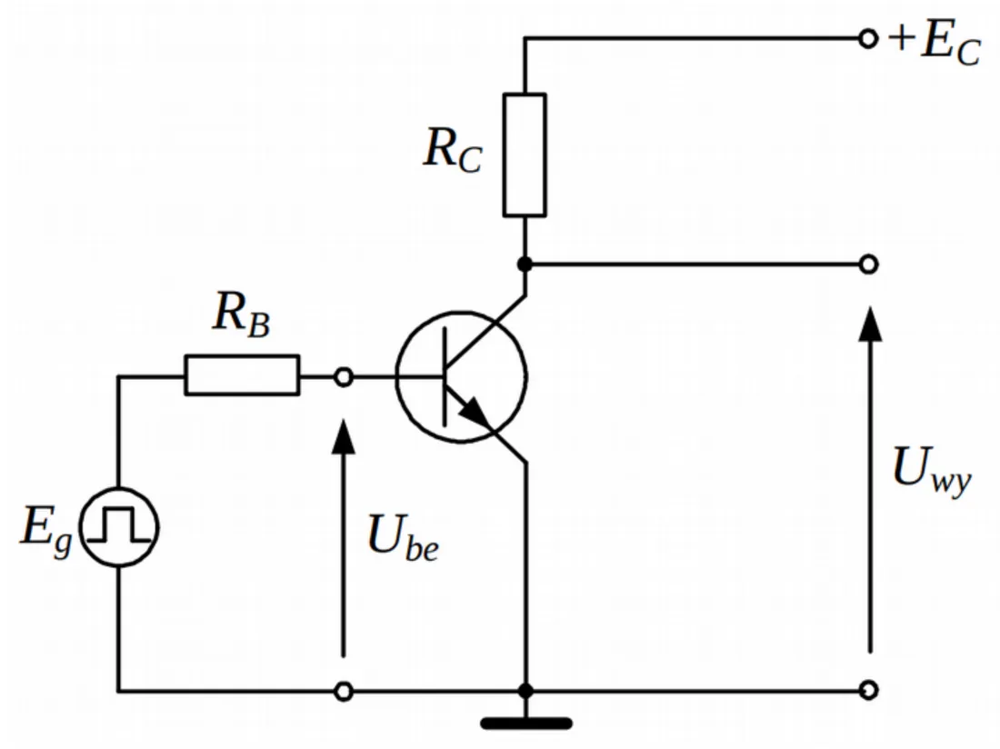
A bipolar transistor is driven with a "strong" signal so that it moves between two extreme states:
| State | Drive | Collector–emitter | Load |
|---|---|---|---|
| Cut-off | no base current (UBE < 0.6 V) | like an open circuit | off |
| Saturation | large base current | almost a short | on |

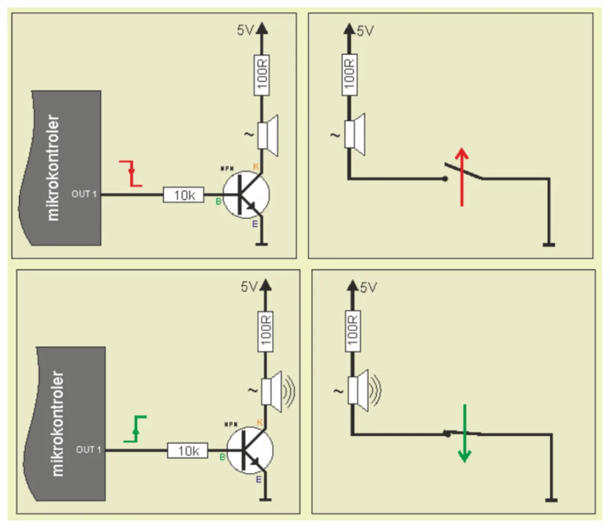
A MOSFET, controlled by its gate voltage, does the same — it is the most common choice in digital circuits.

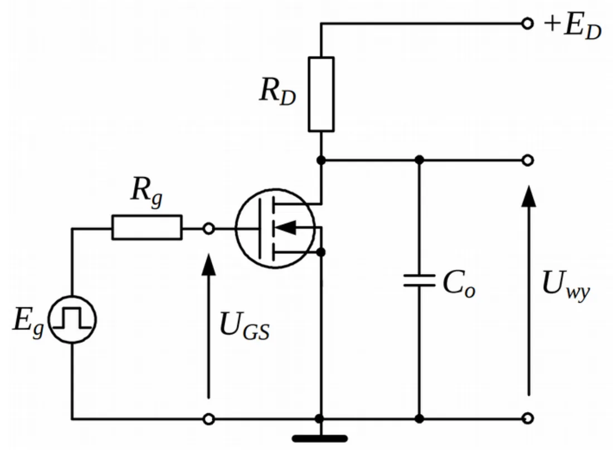
Motors

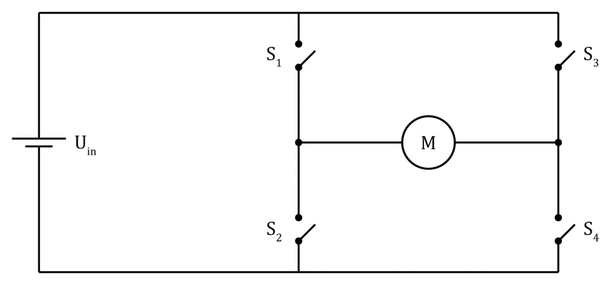
- The speed of a DC motor is controlled by the PWM duty cycle.
- The direction is chosen by an H-bridge — four switches: closing S1 and S4 gives one direction, S2 and S3 the opposite one.

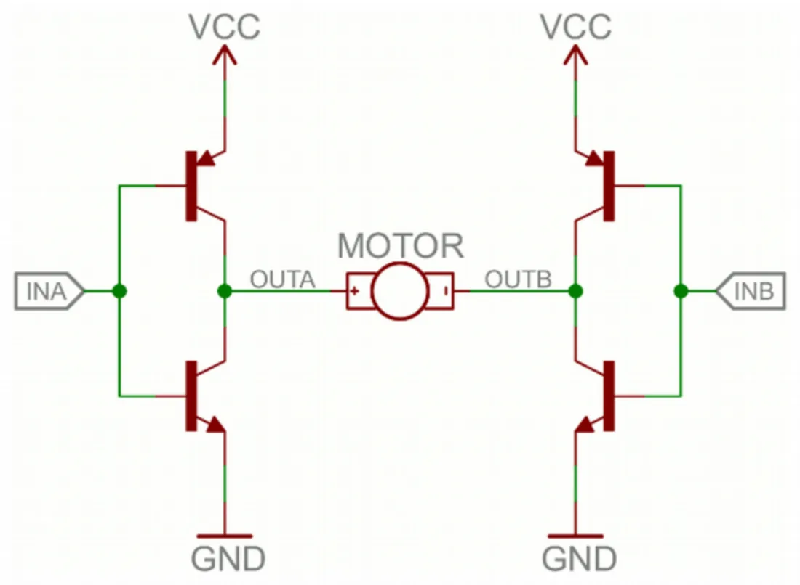
From the site author (not in the lecture)
Two switches on the same side of the bridge (e.g. S1 and S2) are never closed at the same time — that would short the supply to ground.
Brushless motors are miniature three-phase motors; they are driven by a separate controller (ESC) whose input takes the same signal as a servo.
D/A and A/D converters
Digital-to-analog (DAC)
Turns a binary number into a voltage proportional to that number. It has n inputs and one output.

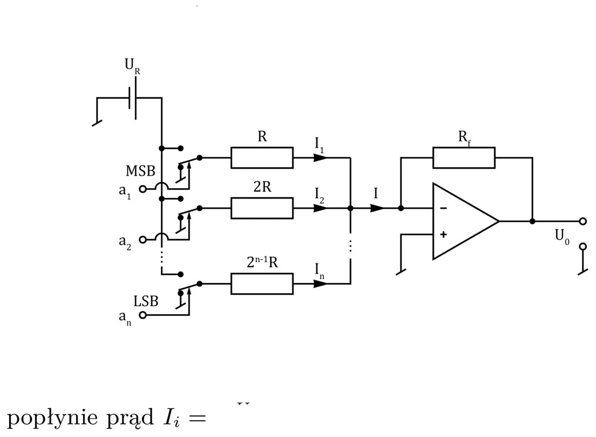
With weighted resistors: each bit switches a current through its own resistor (R, 2R, 4R…), and an op-amp sums the currents (the summing amplifier from lecture 5). The more significant the bit, the smaller the resistor and the larger the current.
Analog-to-digital (ADC)
Turns a voltage into a number. Methods: direct comparison, successive approximation, dual-slope integration, frequency. A/D converters are often built using a D/A converter.

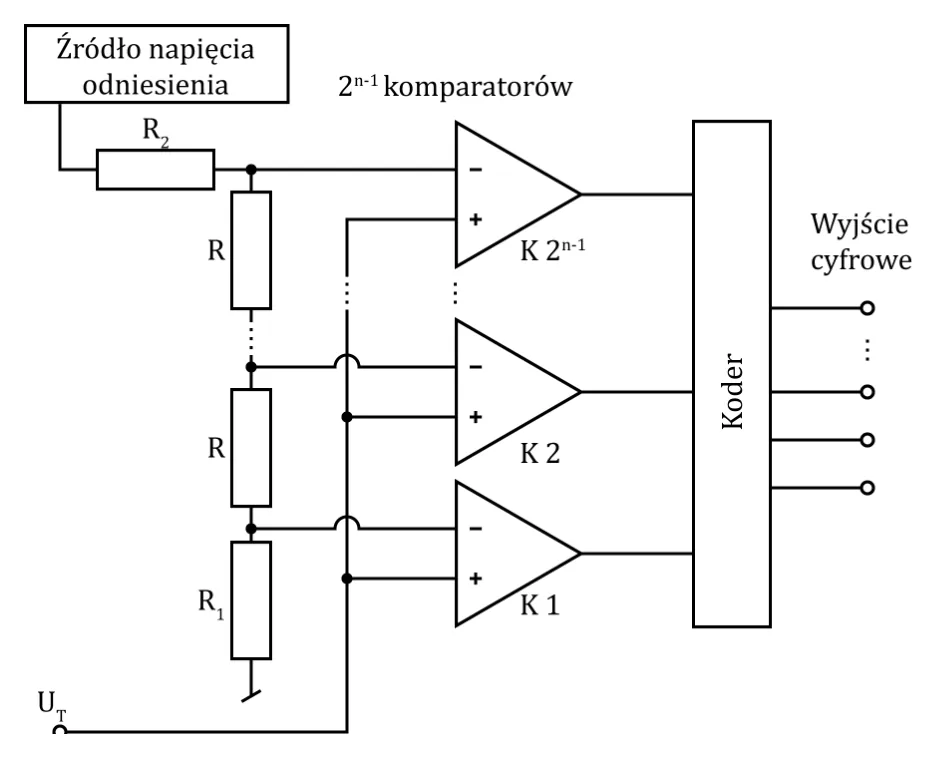

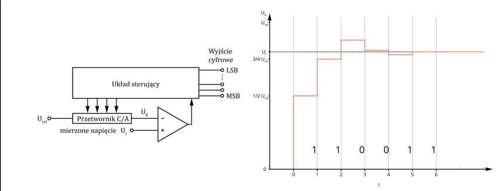
| Method | How it works | Pro | Con |
|---|---|---|---|
| Direct comparison (flash) | the voltage is compared by 2n − 1 comparators at once | very fast (10–20 ns) | a huge number of comparators; only 6–8 bits |
| Successive approximation | compare first with half the range, then a quarter… — n comparisons for n bits | many bits are possible | slower |
In plain words
Successive approximation is a "guess the number" game: "more than half? yes. More than three quarters? no…" — every question gives one bit of the result.
In a microcontroller
- The ADC is built in. Several pins can be analog inputs; they are switched (multiplexed) to a single converter. The voltage must not exceed the supply.
- There is no true analog output. An analog voltage is obtained by integrating a PWM signal — with a low-pass filter or simply in the controlled object (a motor "averages" PWM by itself).

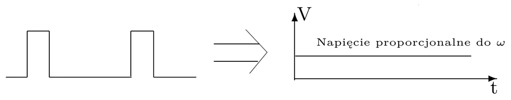
Converting an ADC reading to a voltage
The ATmega328 converter is 10-bit: analogRead() returns a number 0…1023 for voltages 0…5 V.
U = reading · 5 V1023 — e.g. a reading of 512 is about 2.50 V and a reading of 205 about 1.00 V. One converter "step" is about 4.9 mV.
Event handling: polling and interrupts
| Polling | Interrupt | |
|---|---|---|
| Idea | the program itself periodically checks the device's state | the device signals the event; the processor suspends the program and runs a handler |
| Pro | simple | no time wasted on checking; fast reaction |
| Con | most of the time goes on checking; a short event can be missed | harder to program |
| When | one simple task; a device that cannot signal an event itself | many tasks at once |
In plain words
You are waiting for a courier. Polling: every minute you walk to the door and check whether someone is there. Interrupt: you get on with your things, and when the bell rings you put the book down (remembering the page), open the door and go back to reading.
Kinds of interrupts
Hardware:
- external — a signal from an external source (e.g. a button on the INT0 pin),
- internal — from a timer,
- exceptions — raised by the processor in exceptional situations (e.g. division by zero).
- Software — called from program code (e.g. to talk to the operating system).
Maskable interrupts can be disabled and enabled by software; non-maskable ones cannot be disabled (e.g. reset).
The interrupt vector
An interrupt vector is the address where the handler starts. The addresses of all handlers are stored in the interrupt vector table. When an interrupt occurs, the current program counter PC is pushed on the stack and the vector is loaded into PC.

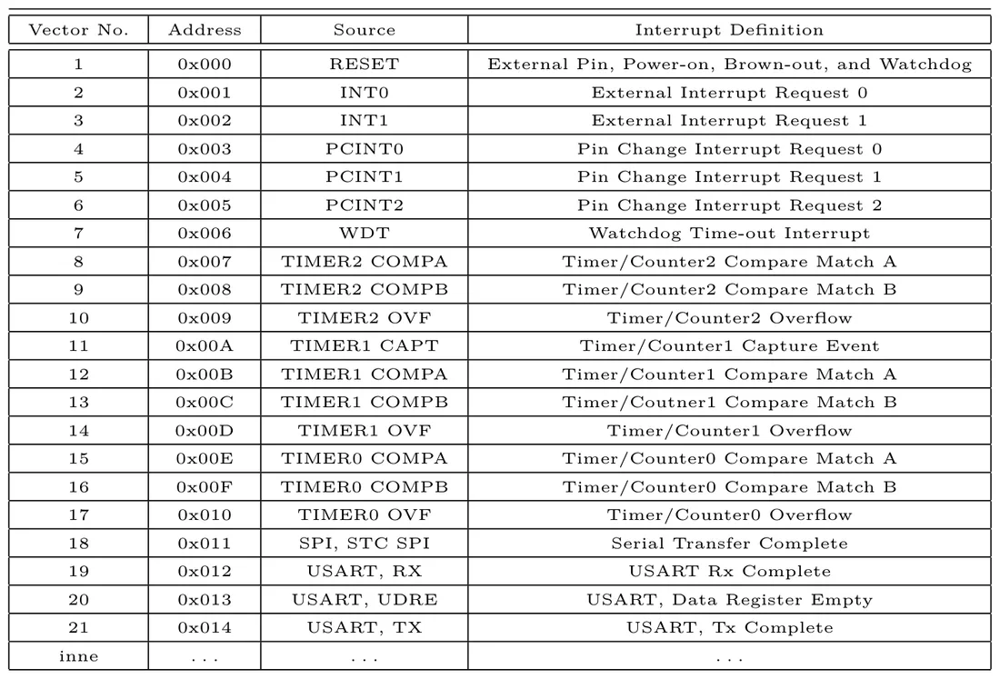
What the handler does
The course of interrupt handling
- Identify the cause of the interrupt.
- Clear the cause of the interrupt.
- Disable interrupts.
- Push the working registers on the stack.
- The actual handling of the interrupt.
- Restore the registers from the stack.
- Enable interrupts.
- Return to the interrupted program.
The rule: an interrupt handler must not change anything in the main program (apart from what it deliberately passes to it) — after returning, the program must carry on as if nothing had happened.
Priorities and delays
Interrupts from different sources arrive at arbitrary, independent moments — several may occur "at once".

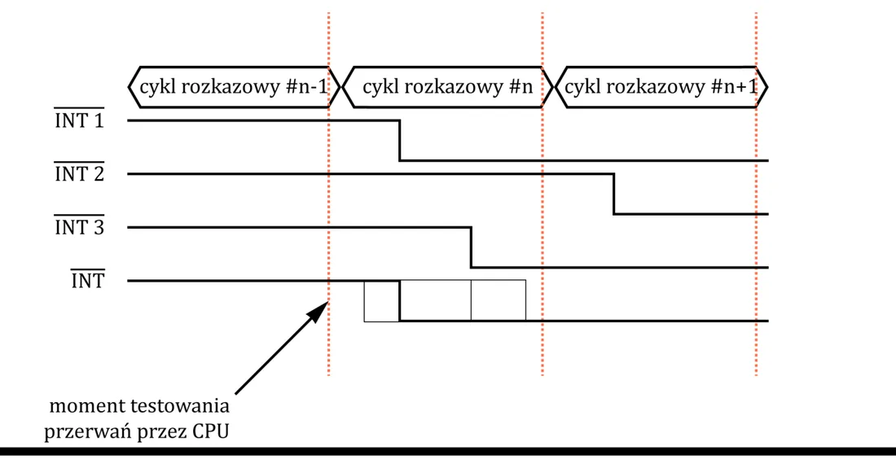
- Without priorities: interrupts wait in a queue; there are delays, and an interrupt may even be lost. The longest wait = the sum of the handling times of the other interrupts.
- With priorities: a more important interrupt can interrupt the handling of a less important one; low-priority ones wait longer.
- In AVR the interrupt system is flat — no hierarchy; all interrupts are equally important.
The choice of interrupt can be made by hardware (an interrupt controller) or by software (a common routine that decides the order itself).
An external interrupt on Arduino
const byte ledPin = 13;
const byte interruptPin = 2;
volatile byte state = LOW;
void setup() {
pinMode(ledPin, OUTPUT);
pinMode(interruptPin, INPUT_PULLUP);
attachInterrupt(digitalPinToInterrupt(interruptPin), blink, CHANGE);
}
void loop() {
digitalWrite(ledPin, state);
}
void blink() {
state = !state;
}What happens here:
attachInterrupt(number, function, mode)— "when something changes on pin 2, callblink". Modes:CHANGE(any change),RISING,FALLING,LOW.digitalPinToInterrupt(2)converts a pin number into an interrupt number (pin 2 = INT0, pin 3 = INT1).INPUT_PULLUPenables the internal pull-up resistor — a released button gives a high level.volatiletells the compiler that the variable may change "out of order" (in the interrupt).- The
loop()does not check the button — it only outputs the current state.
Good habits with interrupts
A handler should be short: set a flag or increment a counter and leave. Do not use delay() or Serial.print() in it. Declare variables shared with the main program as volatile. Remember that a mechanical button "bounces" — one press can trigger several interrupts.
Lab tasks (from the slide)
- Show the scrolling text "hello world" on the LCD.
- Show the voltage from pin A0 (in volts) on the top LCD line and the logic value read from that pin on the bottom line.
- Display data arriving over the serial link on the LCD; send back the ASCII codes of the characters read, separated by spaces.
Step by step: Lab 14. Interrupts and polling in practice: Lab 15.